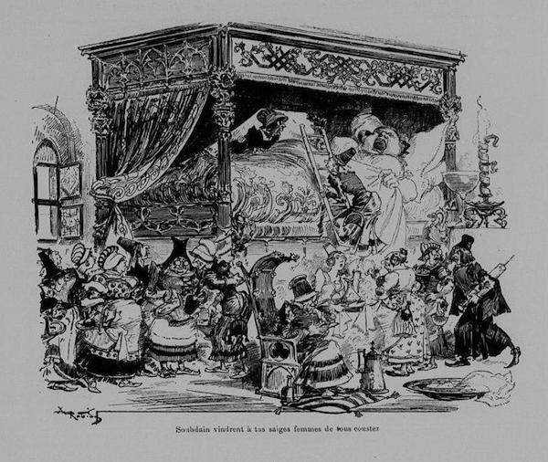

Comment Gargantua naquit de façon bien étrange
Chapitre VI
[...]
Peu de temps après, elle (1) commença à soupirer, à se lamenter et à crier. Soudain, une foule de sages-femmes vinrent de tous côtés. En la tâtant par le bas, elles trouvèrent quelques morceaux de peau d’assez mauvais goût, et pensèrent que c’était l’enfant. Mais c’était le fondement (2) qui lui échappait, à cause du relâchement du gros intestin (lequel vous appelez le boyau du cul), car elle avait trop mangé de tripes, comme nous avons déclaré ci-dessus.
Alors une repoussante vieille de la compagnie, qui était venue de Brisepaille près de Saint-Genou il y a plus de soixante ans et qui avait la réputation d’être un grand médecin, lui fit un astringent (3) si horrible que tous ses sphincters (4) en furent tellement obstrués et resserrés que vous les eussiez élargis à grande peine avec les dents, ce qui est une chose bien horrible à penser. C’est de la même façon que le diable, à la messe de Saint-Martin (5) écrivant le caquetage (6) de deux commères, allongea à belles dents son parchemin.
Suite à cet inconvénient, les cotylédons (7) se relâchèrent, et l’enfant sauta, entra dans la veine cave, et, montant par le diaphragme (8) jusqu’au-dessus des épaules (où ladite veine se partage en deux), il prit son chemin à gauche, et sortit par l’oreille gauche.
Dès qu’il fut né, il ne cria pas comme les autres enfants : « Mies ! mies », mais il s’écriait à haute voix : « À boire ! à boire ! à boire ! », comme s’il invitait tout le monde à boire, si bien qu’il fut entendu de tout le pays de Busse et de Bibarois.
Je me doute que vous ne croyez sûrement pas cette étrange nativité. Si vous n’y croyez pas, je ne m’en soucie guère, mais un homme de bien, un homme de bon sens croit toujours ce qu’on lui dit et qu’il trouve dans les livres. Est-ce contraire à notre loi, à notre foi, à la raison, aux Saintes Écritures ? Pour ma part, je ne trouve rien écrit dans la Sainte Bible qui soit contre cela. Mais, si telle eût été la volonté de Dieu, diriez-vous qu’il ne l’eût pu faire ? Ah ! de grâce, ne vous encombrez jamais l’esprit de ces vaines (9) pensées, car je vous dis qu’à Dieu rien n’est impossible, et, s’il le voulait, les femmes auraient dorénavant ainsi leurs enfants par l’oreille.
Bacchus ne fut-il pas engendré par la cuisse de Jupiter ?
Roquetaillade ne naquit-il pas du talon de sa mère ?
Croquemouche de la pantoufle de sa nourrice ?
Minerve ne naquit-elle pas du cerveau par l’oreille de Jupiter ?
Adonis par l’écorce d’un arbre à myrrhe ?
Castor et Pollux de la coque d’un œuf pondu et couvé par Léda ?
Mais vous seriez bien davantage ébahis et étonnés si je vous exposais à présent tout le chapitre de Pline où il parle des enfantements étranges et contre nature ; et toutefois je ne suis point un menteur aussi effronté (10) qu’il l’a été. Lisez le septième livre de son Histoire naturelle, chap. III, et ne me tarabustez plus l’esprit avec ça (11).
